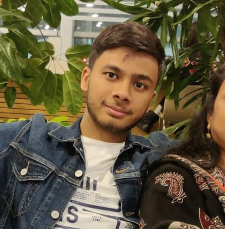

Aniket Kumar

About Me
Aspiring computer programmer pursuing a B.E.(Hons.) degree and having troubleshooting and problem solving skills. Seeking an entry-level programmer or coder position to continue expanding my knowledge of different languages and systems. Have also acquired skills in web development as well as iOS-app development.
Education Background
- BMSIT&M, Yelahanka
Persuing BE honours in CSE Engineering
CGPA : 9.42
-
Deeksha, Yelahanka
12th percentage : 87.50%
Completed in 2020
-
Kendriya Vidyalaya C.R.P.F
10th percentage : 96.8%
Completed in 2018
Projects Developed
- Vaccine Management System
- It is meant for a particular hospital
- Analyses the number of vaccines available in a hospital
- Prepare reports on number of people vaccinated based on age, gender and cities
- Provides a platform for people to book vaccines
- Cloning NETFLIX, TWITTER, LINKEDIN
- Cloning the above website using HTML, CSS, Javascript
- Explored various frontend techniques
- Food Waste Management System
- Main goal is to reduce the food wastage in functions, events, hostel, restaurants ,etc.
- Provides a platform for donors to donate and receivers to receive food.
Skills
- Technical Skills
- iOS-app development
- Full Stack-Web Development
- Python
- C, C++
- Java
- Soft Skills
- Observation
- Teamwork
- Communication
- Multi-tasking
Achievements
- School topper in 10th standard
- Represented Bangalore region in Chess tournament
Others